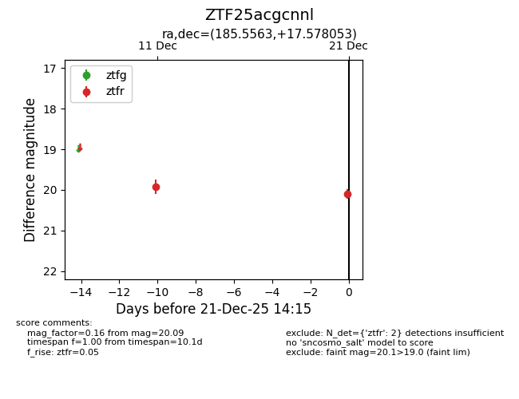
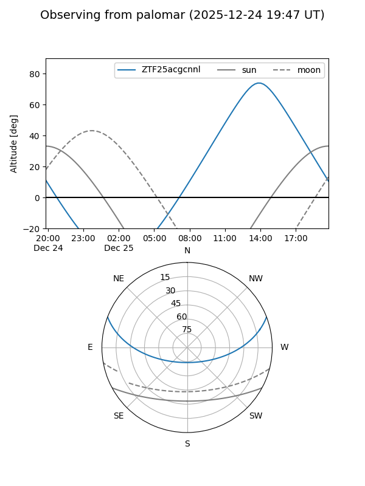

ZTF25acgcnnl
Target ZTF25acgcnnl at 2025-12-21 14:17
Aliases and brokers:
FINK: fink-portal.org/ZTF25acgcnnl
Lasair: lasair-ztf.lsst.ac.uk/objects/ZTF25acgcnnl
ALeRCE: alerce.online/object/ZTF25acgcnnl
alt names
ZTF25acgcnnl (ztf,fink_ztf)
Coordinates:
equatorial (ra, dec) = 185.5563,+17.57805
equatorial (HMS+DMS) = 12:22:13.51,+17:34:40.99
galactic (l, b) = (266.1988,+78.30983)
Flags:
Photometry:
last ztfr=20.09
2 ztfr detections
Lightcurve

Visibility


Additional plots